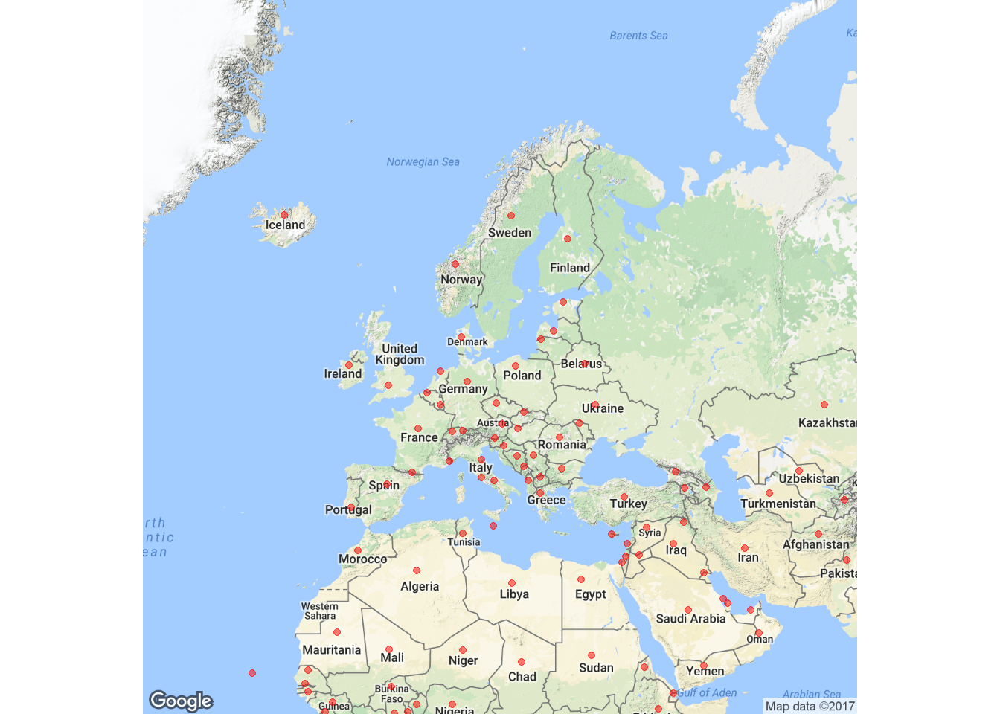

Coordinate da una Google Map
Avete creato una mappa su Google Maps aggiungendo vari segnaposti e volete lavorarci con R? Ecco come avere le coordinate a portata di R.
Come mappa di esempio, utilizziamo A year of reading the world: nel 2015 Ann Morgan si è cimentata nella lettura di 196 libri, pubblicati in altrettante nazioni (per i curiosi, suggerisco questo articolo, tramite cui ho scoperto il progetto; Ann ha poi anche scritto un libro sull’esperienza).
Torniamo a R. Se siete sulla pagina della mappa (primo link del paragrafo precedente), tra le opzioni (cliccando sui tre punti allineati verticalmente) si trova Download KML: cliccate e scaricate nella cartella che preferite.
Dopodiché è questione di una manciata di righe di codice.
library(rgdal)
filename <- "cartella/ove/hai/salvato/world_books.kml"
(lyr <- ogrListLayers(filename))
map <- readOGR (filename, layer=lyr, verbose = TRUE, drop_unsupported_fields=T, dropNULLGeometries=T)## Loading required package: methods## Loading required package: sp## rgdal: version: 1.1-7, (SVN revision 612)
## Geospatial Data Abstraction Library extensions to R successfully loaded
## Loaded GDAL runtime: GDAL 2.0.1, released 2015/09/15
## Path to GDAL shared files: C:/Users/mmarchi/Documents/R/win-library/3.3/rgdal/gdal
## GDAL does not use iconv for recoding strings.
## Loaded PROJ.4 runtime: Rel. 4.9.1, 04 March 2015, [PJ_VERSION: 491]
## Path to PROJ.4 shared files: C:/Users/mmarchi/Documents/R/win-library/3.3/rgdal/proj
## Linking to sp version: 1.2-2## [1] "Untitled layer"
## attr(,"driver")
## [1] "KML"
## attr(,"nlayers")
## [1] 1## OGR data source with driver: KML
## Source: "C:/Users/mmarchi/Downloads/world_books.kml", layer: "Untitled layer"
## with 197 features
## It has 2 fieldsL’oggetto map contiene tutte le informazioni per ricreare la mappa, incluse le coordinate.
head(map@coords)## coords.x1 coords.x2 coords.x3
## [1,] -100.79019 41.36432 0
## [2,] -99.06950 21.66292 0
## [3,] -113.73047 54.67383 0
## [4,] -77.51953 21.20705 0
## [5,] -90.39519 14.18172 0
## [6,] -77.73926 24.17683 0Con il pacchetto ggmap possiamo creare la nostra versione della mappa (di seguito uno zoom sull’Europa).
library(ggmap)## Loading required package: ggplot2ggmap(get_map("Europe", zoom=3), extent = "device") +
geom_point(data=as.data.frame(map@coords), aes(x=coords.x1, y=coords.x2), alpha=.5, col="red")## Map from URL : http://maps.googleapis.com/maps/api/staticmap?center=Europe&zoom=3&size=640x640&scale=2&maptype=terrain&language=en-EN&sensor=false## Information from URL : http://maps.googleapis.com/maps/api/geocode/json?address=Europe&sensor=false## Warning: `panel.margin` is deprecated. Please use `panel.spacing` property
## instead## Warning: Removed 104 rows containing missing values (geom_point).